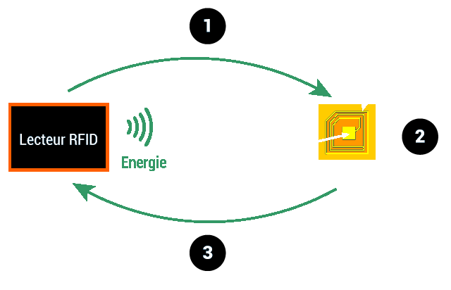

Tous les jours, nous utilisons des produits RFID sans le savoir : à travers des cartes Navigo, des étiquettes antivols dans les magasins, des badges RFID, badges de sécurité ou plus récemment des clés sans contact pour voiture. Cette technologie permet de faire gagner du temps aux usagers et plus particulièrement aux entreprises d'avoir une lecture rapide des données. Mais savez-vous vraiment ce qu’est la RFID ?
L'abréviation RFID signifie « Radio Frequency IDentification », en français, « Identification par Radio Fréquence ». Il s'agit d'une étiquette permettant d’identifier un objet, d’en suivre le cheminement et d’en connaître les caractéristiques à distance, celle-ci émet des ondes radio, attachée ou incorporée à l’objet. La RFID permet la lecture des étiquettes, elle a la capacité de traverser de fines couches de matériaux (peinture, neige, etc.).
L’étiquette radiofréquence (transpondeur, étiquette RFID), est composée d’une puce (en anglais « chip ») reliée à une antenne, encapsulées dans un support (RFID Tag ou RFID Label). Elle est lue par un lecteur qui capte et transmet l’information.

On distingue 3 catégories d’étiquettes RFID :
Par ailleurs, il existe deux grandes familles d'étiquettes RFID :
Exemples d’applications :
Les applications RFID s’appuient sur différents standards dépendant des fonctionnalités exigées par les processus métier et par certaines contraintes locales (ex. : bande de fréquence de transmission ou puissance nécessaire).
La RFID permet de répondre à un grand nombre de besoins. Elle se développe bien en intra entreprise et dans la logistique. Les principales difficultés auxquelles le standard RFID doit faire face sont en voie d’être surmontées : coût de l’étiquette (plus de 0,10€ pour les moins chères), gestion de l’anti-collision en cas de lecture de nombreuses étiquettes en simultané, lecture au travers des fluides, adoption ou convergence trop lente de certains standards, remise en cause de processus anciens, problèmes de sécurité et d'éthique.
L’étiquette RFID sera le support du système EPC (Electronic Product Code, soit Code produit électronique), représentant « le réseau de la traçabilité des objets ». Il prévoit notamment l’identification unitaire des objets ( étiquettes à codification séquentielle) et se rattache à un réseau de partage des données sur Internet. EPC a été impulsé par les grands acteurs mondiaux de l’industrie du commerce et des systèmes d’information. Il a été développé par le MIT (Massachussetes Institute of Technology). En France, c’est EPC Global France, émanation de GS1-France (ex Gencod-Ean France), qui en assure le développement et la promotion.